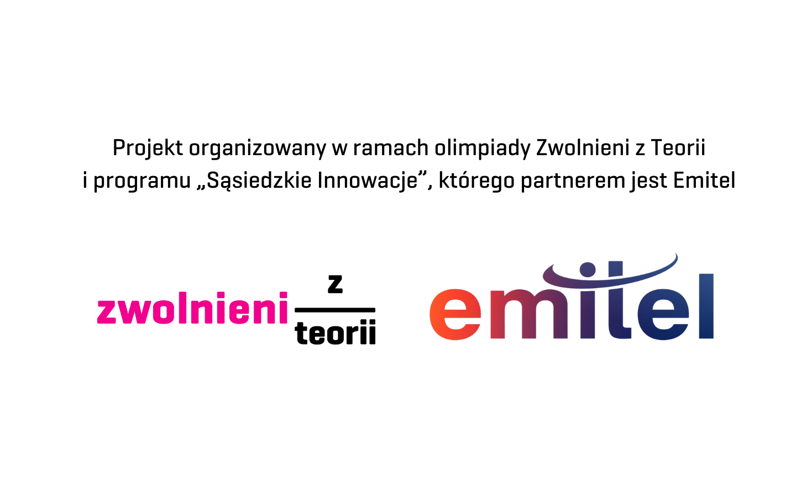
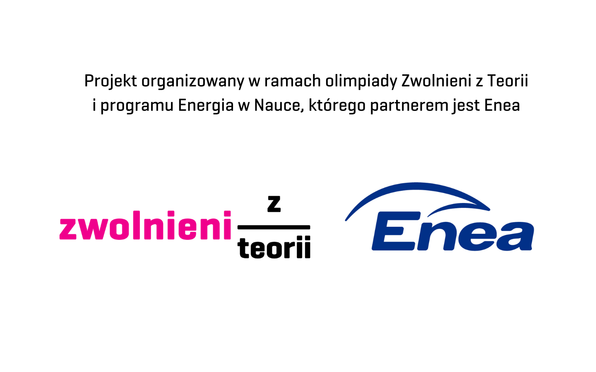

Materiały
O projekcie
Decybelomierz to projekt realizowany w roku szkolnym 2024/2025 w ramach olimpiady "Zwolnieni z Teorii". Jego
twórcami są uczniowie I Liceum Ogólnokształcącego im. Książąt Pomorskich w Rumi - Agata Wojciechowska, Julia
Kołodziejczyk, Agata Gomułka, Piotr Stęchły, Krzysztof Murawski i Jan Dorszyński.
Wsparcie finansowe
Założyliśmy zrzutkę ma pomagam.pl!
Realizacja każdego projektu społecznego wymaga nie tylko pracowitości i chęci, ale także budżetu. Pieniądze chcemy przeznaczyć na rozwój projektu - m.in. materiały promocyjne. Każda złotówka sprawia, że możemy rozwijać projekt i zyskiwać punkty w olimpiadzie:)
Niewykorzystaną część zebranych pieniędzy przekażemy na cele charytatywne związane z tematyką projektu 🙂
W przypadku chęci wsparcia nas w inny sposób lub podzielenia się pomysłami, prosimy o kontakt mailowy: decybelomierz@gmail.com.
Dziękujemy za Wasze wsparcie i do usłyszenia!
Ekipa Decybelomierza
Partnerzy projektu


© Decybelomierz. Wszelkie prawa zastrzeżone.